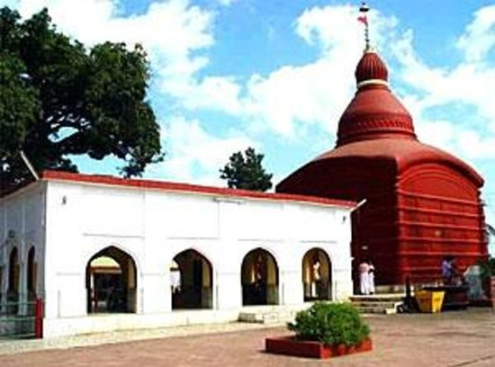
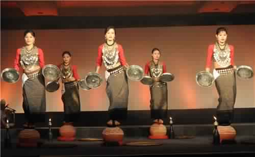
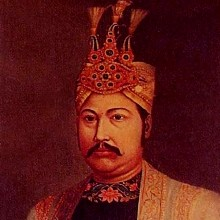
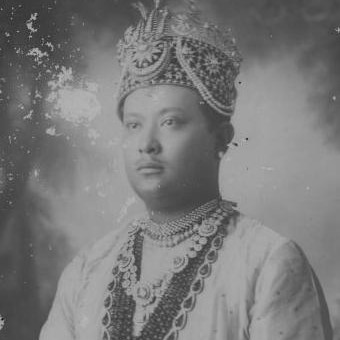
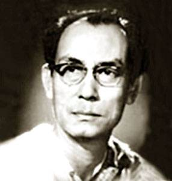
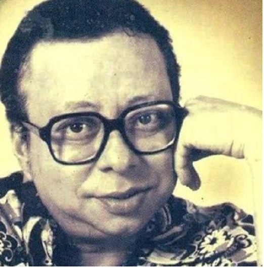
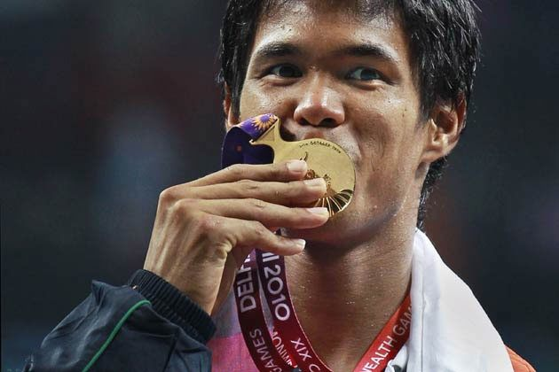
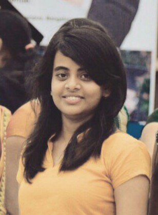

Formar palace of Tripura , situated in Agartala. It was establised in 1901.This palace was built by Maharaja Radha Kishor Manikya.The name Ujjayanta Palace was given by Rabindranath Tagore
Tripura is a landlocked state in North East India, where the seven contiguous states – Arunachal Pradesh, Assam, Manipur, Meghalaya, Mizoram, Nagaland and Tripura – are collectively known as the Seven Sister States.
Tripura is the third-smallest among the 29 states in the country, behind Goa and Sikkim.
The history of Tripura so rich and its unknown from rest of the world. The Tripur Dynasty which had ruled the state more then five thousand years ,is one of the few Hindu king's ruled state till the independent of India. 15th Octobar 1949, Tripura merged with India.
The Origin of Tripur Dynasty
We can find about the origin of Tripur dynasty in "Mahabharatha" and even in "Bishnu Puran" gives us the similar information about Beginning of this dynasty.
Tripur Dynasty was originated from "Chandra Vangsha" (Luner Dynasty). Later on the name of King Tripur, the kingdom had been name as TRIPURA. Approximate 184 kings had ruled this state.
TRIPURI JANAJATI

TRIPURESHWARI TEMPLE
Tripureshwari temple is situated at Udaipur, which is one of the 51st Sakthi Pitha of Hindu Mythology.
In the year 2018 the state had 4.546 million occupants(approx), constituting 0.3% of the nation’s population. The Bengali Hindu people frame the ethno-etymological majority in the state. Scheduled tribes structure around 30% of the state’s population. The "Kokborok" speaking Tripuri individuals are the significant group among 19 tribes and numerous subtribes. The main indigenous Tripuri communities are : Debbarma, Tripura, Reang or Bru, Jamatia, Koloi, Noatia, Murasing, Uchoi, Rupini. Basically Tripuri communities are Hindu and keep alive their Traditions and Culture in worship,festivals and as well as in their daily life style.
The Main Festivals of Tripuri Janajati:
Kharchi Puja
This puja was started by Maharaja Trilochan and till now the people of Tripura especially the trible communities celebrating this festival grandly. In kharchi puja, 14 deities are ceremoniously worshipped.
This weeklong festival is celebrated every year in the month of July.
In the year of 1761, Maharaja Krishna Manikya Debbarma establised the temple "Chaturdash Devata Temple" dedicated to Karchi puja and it's 14 deities.
Ker Puja
Ker Puja starts generally fifteen days after Kharchi Puja and it is the general belief that this Puja is performed by the state's royalfamily within the palace for the welfare of the State and its people.
Diwali
Diwali festival specially held on the Temple of "Tripureshwari". Tripureshwari temple is situated at Udaipur, which is one of the 51st Sakthi Pitha of Hindu Mythology. As per “Pithamala Grantha”, Sati’s right foot falls here during Lord Siva’s “Tandava” Dance. All these informations are gathered from the manuscripts of the Temple.
The present temple had been establised by Maharaja Dhanya Manikya in the year 1501.
The Folk Dance and Music of Tripuri Jamatia:

HOJAGIRI DANCE
Tripureshwari temple is situated at Udaipur, which is one of the 51st Sakthi Pitha of Hindu Mythology.
Folk Music
The traditional folk music of the indigenious people of Tripura dates back thousands of years , and the people of tripura are justify proud of this rich culture hetitage
Folk Dance
Each Tripura trible communities have their own dance form, which play a significant role in their life.
The Garia Dance is revolve around Garia Puja, where people do worship the god of good Harvest and Garia dance is an integral part of this Puja.
The Cheraw Dance or Bamboo Dance is a dance of the Lushai community. This dance is performed by the womwn to help instil confidence in a pragnant woman.
The Bizu Dance is important socio-religious part for Chakma community.This dance is performed during Bizu festival to tell goodbye to the ended year.
The Hozagiri Dance is one of the main dance form of Tripura, which is mainly practiced by the Reang community people. This dance is performed during the selection of a site for Jhum, to pray to Mainuma, the goddess of wealth.
MANIKYA DYNASTY
Manikya Dynasty was establised by "Ratna Fa", who was honered by the titli "MANIKYA" from Sultan Mughisuddin Tughril.From then to till Tripura became a part of Indian, the Manikya Dynasty has ruled Tripura.
The last Manikya king of Tripura was Maharaja Birbikra Kishor Manikya. Few memorable kings of this dynasty are
 Radha Kishor Manikya
Maharaja Radha Kishore Manikya of the Manikya Dynasty reigned as the king of Tripura State from 1896 to 1909.The King had a close relationship with Rabindranath Tagore. Tagore first visited Tripura in 1900 during his reign.
Jagadish Chandra received financial assistance for both of his researches on life and physical science from Maharaja Radha Kishor Manikya. During those days on the request of Rabindranath sapling of muli bamboo used to be sent from Tripura for his research work.
 Bir Bikram Kishor Manikya
Maharaja Bir Bikram Kishore Manikya of the Manikya Dynasty reigned as the king of Tripura State from 1923. He is called the Father of MOrder Architects of Tripura.
Only a month ahead of the octogenarian Tagore's death king Bir Bikram Kishore Manikya himself, accompanied by other royal personages, visited 'Viswa Bharati' and conferred the title of "Bharat Bhaskar" on Rabindranath.
FAMOUS PERSONALITIES
If we talk about the people, there have been several luminaries who have made the state proud in more than one way. Let us take a look at some of famous people of Tripura.

Sachine Dev Burman
Legendary Music Director

Rahul Dev Burman
Famous Music Director

Somdev Devvurman
Indian Tennis Player
Dipa Karmakar
First Indian Woman Gynmast To Win International Medal
CONTACT INFORMATION
DEVELOPED BY:

SUMEDHA ROY
Master of Computer Applications(2018) B.M.S Collage of Engineering Bangalore.